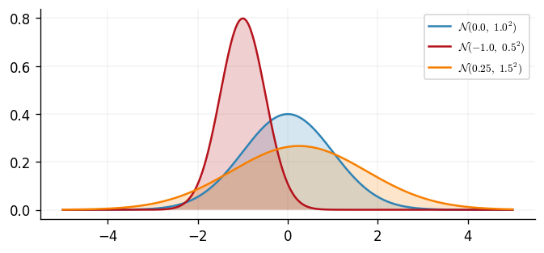
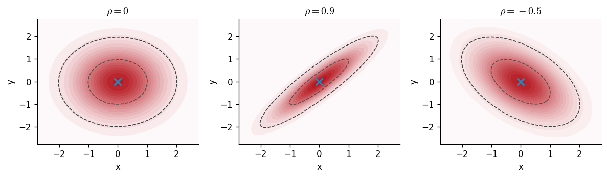
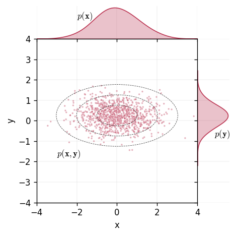
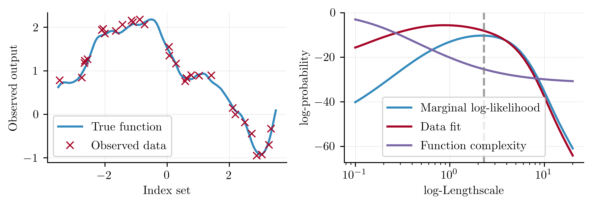

New to Gaussian Processes?
Fantastic that you're here! This notebook is designed to be a gentle introduction to the mathematics of Gaussian processes (GPs). No prior knowledge of Bayesian inference or GPs is assumed, and this notebook is self-contained. At a high level, we begin by introducing Bayes' theorem and its implications within probabilistic modelling. We then proceed to introduce the Gaussian random variable along with its multivariate form. We conclude by showing how this notion can be extended to GPs.
Bayes' Theorem
A probabilistic modelling task is comprised of an observed dataset \(\mathbf{y}\) for which we construct a model. The parameters \(\theta\) of our model are unknown, and our goal is to conduct inference to determine their range of likely values. To achieve this, we apply Bayes' theorem
where \(p(\mathbf{y}\,|\,\theta)\) denotes the likelihood, or model, and quantifies how likely the observed dataset \(\mathbf{y}\) is, given the parameter estimate \(\theta\). The prior distribution \(p(\theta)\) reflects our initial beliefs about the value of \(\theta\) before observing data, whilst the posterior \(p(\theta\,|\, \mathbf{y})\) gives an updated estimate of the parameters' value, after observing \(\mathbf{y}\). The marginal likelihood, or Bayesian model evidence, \(p(\mathbf{y})\) is the probability of the observed data under all possible hypotheses that our prior model can generate. Within Bayesian model selection, this property makes the marginal log-likelihood an indispensable tool. Selecting models under this criterion places a higher emphasis on models that can generalise better to new data points.
When the posterior distribution belongs to the same family of probability distributions as the prior, we describe the prior and the likelihood as conjugate to each other. Such a scenario is convenient in Bayesian inference as it allows us to derive closed-form expressions for the posterior distribution. When the likelihood function is a member of the exponential family, then there exists a conjugate prior. However, the conjugate prior may not have a form that precisely reflects the practitioner's belief surrounding the parameter. For this reason, conjugate models seldom appear; one exception to this is GP regression that we present fully in our Regression notebook.
For models that do not contain a conjugate prior, the marginal log-likelihood must be calculated to normalise the posterior distribution and ensure it integrates to 1. For models with a single, 1-dimensional parameter, it may be possible to compute this integral analytically or through a quadrature scheme, such as Gauss-Hermite. However, in machine learning, the dimensionality of \(\theta\) is often large and the corresponding integral required to compute \(p(\mathbf{y})\) quickly becomes intractable as the dimension grows. Techniques such as Markov Chain Monte Carlo and variational inference allow us to approximate integrals such as the one seen in \(p(\mathbf{y})\).
Once a posterior distribution has been obtained, we can make predictions at new points \(\mathbf{y}^{\star}\) through the posterior predictive distribution. This is achieved by integrating out the parameter set \(\theta\) from our posterior distribution through
As with the marginal log-likelihood, evaluating this quantity requires computing an integral which may not be tractable, particularly when \(\theta\) is high-dimensional.
It is difficult to communicate statistics directly through a posterior distribution, so we often compute and report moments of the posterior distribution. Most commonly, we report the first moment and the centred second moment
Through this pair of statistics, we can communicate our beliefs about the most likely value of \(\theta\) i.e., \(\mu\), and the uncertainty \(\sigma\) around the expected value. However, as with the marginal log-likelihood and predictive posterior distribution, computing these statistics again requires a potentially intractable integral.
Gaussian random variables
We begin our review with the simplest case; a univariate Gaussian random variable. For a random variable \(y\), let \(\mu\in\mathbb{R}\) be a mean scalar and \(\sigma^2\in\mathbb{R}_{>0}\) a variance scalar. If \(y\) is a Gaussian random variable, then the density of \(y\) is $$ \begin{align} \mathcal{N}(y\,|\, \mu, \sigma^2) = \frac{1}{\sqrt{2\pi\sigma^2}}\exp\left(-\frac{(y-\mu)^2}{2\sigma^{2}}\right)\,. \end{align} $$ We can plot three different parameterisations of this density.
import warnings
import jax.numpy as jnp
import jax.random as jr
import matplotlib as mpl
import matplotlib.pyplot as plt
import pandas as pd
import seaborn as sns
import tensorflow_probability.substrates.jax as tfp
from examples.utils import (
confidence_ellipse,
use_mpl_style,
)
# set the default style for plotting
use_mpl_style()
key = jr.key(42)
cols = mpl.rcParams["axes.prop_cycle"].by_key()["color"]
tfd = tfp.distributions
ud1 = tfd.Normal(0.0, 1.0)
ud2 = tfd.Normal(-1.0, 0.5)
ud3 = tfd.Normal(0.25, 1.5)
xs = jnp.linspace(-5.0, 5.0, 500)
fig, ax = plt.subplots()
for d in [ud1, ud2, ud3]:
ax.plot(
xs,
jnp.exp(d.log_prob(xs)),
label=f"$\\mathcal{{N}}({{{float(d.mean())}}},\\ {{{float(d.stddev())}}}^2)$",
)
ax.fill_between(xs, jnp.zeros_like(xs), jnp.exp(d.log_prob(xs)), alpha=0.2)
ax.legend(loc="best")
<matplotlib.legend.Legend at 0x7fe986da24d0>

A Gaussian random variable is uniquely defined in distribution by its mean \(\mu\) and variance \(\sigma^2\) and we therefore write \(y\sim\mathcal{N}(\mu, \sigma^2)\) when describing a Gaussian random variable. We can compute these two quantities by $$ \begin{align} \mathbb{E}[y] = \mu\,, \quad \quad \mathbb{E}\left[(y-\mu)^2\right] =\sigma^2\,. \end{align} $$ Extending this concept to vector-valued random variables reveals the multivariate Gaussian random variables which brings us closer to the full definition of a GP.
Let \(\mathbf{y}\) be a \(D\)-dimensional random variable, \(\boldsymbol{\mu}\) be a \(D\)-dimensional mean vector and \(\boldsymbol{\Sigma}\) be a \(D\times D\) covariance matrix. If \(\mathbf{y}\) is a Gaussian random variable, then the density of \(\mathbf{y}\) is $$ \begin{align} \mathcal{N}(\mathbf{y}\,|\, \boldsymbol{\mu}, \boldsymbol{\Sigma}) = \frac{1}{\sqrt{2\pi}^{D/2} \lvert\boldsymbol{\Sigma}\rvert^{1/2}} \exp\left(-\frac{1}{2} \left(\mathbf{y} - \boldsymbol{\mu}\right)^T \boldsymbol{\Sigma}^{-1} \left(\mathbf{y}-\boldsymbol{\mu}\right) \right) \,. \end{align} $$ Three example parameterisations of this can be visualised below where \(\rho\) determines the correlation of the multivariate Gaussian.
key = jr.key(123)
d1 = tfd.MultivariateNormalDiag(loc=jnp.zeros(2), scale_diag=jnp.ones(2))
d2 = tfd.MultivariateNormalTriL(
jnp.zeros(2), jnp.linalg.cholesky(jnp.array([[1.0, 0.9], [0.9, 1.0]]))
)
d3 = tfd.MultivariateNormalTriL(
jnp.zeros(2), jnp.linalg.cholesky(jnp.array([[1.0, -0.5], [-0.5, 1.0]]))
)
dists = [d1, d2, d3]
xvals = jnp.linspace(-5.0, 5.0, 500)
yvals = jnp.linspace(-5.0, 5.0, 500)
xx, yy = jnp.meshgrid(xvals, yvals)
pos = jnp.empty(xx.shape + (2,))
pos.at[:, :, 0].set(xx)
pos.at[:, :, 1].set(yy)
fig, (ax0, ax1, ax2) = plt.subplots(figsize=(10, 3), ncols=3, tight_layout=True)
titles = [r"$\rho = 0$", r"$\rho = 0.9$", r"$\rho = -0.5$"]
cmap = mpl.colors.LinearSegmentedColormap.from_list("custom", ["white", cols[1]], N=256)
for a, t, d in zip([ax0, ax1, ax2], titles, dists, strict=False):
d_prob = d.prob(jnp.hstack([xx.reshape(-1, 1), yy.reshape(-1, 1)])).reshape(
xx.shape
)
cntf = a.contourf(xx, yy, jnp.exp(d_prob), levels=20, antialiased=True, cmap=cmap, edgecolor="face")
a.set_xlim(-2.75, 2.75)
a.set_ylim(-2.75, 2.75)
samples = d.sample(seed=key, sample_shape=(5000,))
xsample, ysample = samples[:, 0], samples[:, 1]
confidence_ellipse(
xsample, ysample, a, edgecolor="#3f3f3f", n_std=1.0, linestyle="--", alpha=0.8
)
confidence_ellipse(
xsample, ysample, a, edgecolor="#3f3f3f", n_std=2.0, linestyle="--"
)
a.plot(0, 0, "x", color=cols[0], markersize=8, mew=2)
a.set(xlabel="x", ylabel="y", title=t)
/tmp/ipykernel_14085/1173410688.py:31: UserWarning: The following kwargs were not used by contour: 'edgecolor'
cntf = a.contourf(xx, yy, jnp.exp(d_prob), levels=20, antialiased=True, cmap=cmap, edgecolor="face")
/tmp/ipykernel_14085/1173410688.py:31: UserWarning: The following kwargs were not used by contour: 'edgecolor'
cntf = a.contourf(xx, yy, jnp.exp(d_prob), levels=20, antialiased=True, cmap=cmap, edgecolor="face")
/tmp/ipykernel_14085/1173410688.py:31: UserWarning: The following kwargs were not used by contour: 'edgecolor'
cntf = a.contourf(xx, yy, jnp.exp(d_prob), levels=20, antialiased=True, cmap=cmap, edgecolor="face")

Extending the intuition given for the moments of a univariate Gaussian random variables, we can obtain the mean and covariance by
The covariance matrix is a symmetric positive definite matrix that generalises the notion of variance to multiple dimensions. The matrix's diagonal entries contain the variance of each element, whilst the off-diagonal entries quantify the degree to which the respective pair of random variables are linearly related; this quantity is called the covariance.
Assuming a Gaussian likelihood function in a Bayesian model is attractive as the mean and variance parameters are highly interpretable. This makes prior elicitation straightforward as the parameters' value can be intuitively contextualised within the scope of the problem at hand. Further, in models where the posterior distribution is Gaussian, we again use the distribution's mean and variance to describe our prediction and corresponding uncertainty around a given event occurring.
Not only are Gaussian random variables highly interpretable, but linear operations involving them lead to analytical solutions. An example of this that will be useful in the sequel is the marginalisation and conditioning property of sets of Gaussian random variables. We will present these two results now for a pair of Gaussian random variables, but it should be stressed that these results hold for any finite set of Gaussian random variables.
For a pair of random variables \(\mathbf{x}\) and \(\mathbf{y}\) defined on the same support, the distribution over them both is known as the joint distribution. The joint distribution \(p(\mathbf{x}, \mathbf{y})\) quantifies the probability of two events, one from \(p(\mathbf{x})\) and another from \(p(\mathbf{y})\), occurring at the same time. We visualise this idea below.
n = 1000
x = tfd.Normal(loc=0.0, scale=1.0).sample(seed=key, sample_shape=(n,))
key, subkey = jr.split(key)
y = tfd.Normal(loc=0.25, scale=0.5).sample(seed=subkey, sample_shape=(n,))
key, subkey = jr.split(subkey)
xfull = tfd.Normal(loc=0.0, scale=1.0).sample(seed=subkey, sample_shape=(n * 10,))
key, subkey = jr.split(subkey)
yfull = tfd.Normal(loc=0.25, scale=0.5).sample(seed=subkey, sample_shape=(n * 10,))
key, subkey = jr.split(subkey)
df = pd.DataFrame({"x": x, "y": y, "idx": jnp.ones(n)})
with warnings.catch_warnings():
warnings.simplefilter("ignore")
g = sns.jointplot(
data=df,
x="x",
y="y",
hue="idx",
marker=".",
space=0.0,
xlim=(-4.0, 4.0),
ylim=(-4.0, 4.0),
height=4,
marginal_ticks=False,
legend=False,
palette="inferno",
marginal_kws={
"fill": True,
"linewidth": 1,
"color": cols[1],
"alpha": 0.3,
"bw_adjust": 2,
"cmap": cmap,
},
joint_kws={"color": cols[1], "size": 3.5, "alpha": 0.4, "cmap": cmap},
)
g.ax_joint.annotate(text=r"$p(\mathbf{x}, \mathbf{y})$", xy=(-3, -1.75))
g.ax_marg_x.annotate(text=r"$p(\mathbf{x})$", xy=(-2.0, 0.225))
g.ax_marg_y.annotate(text=r"$p(\mathbf{y})$", xy=(0.4, -0.78))
confidence_ellipse(
xfull,
yfull,
g.ax_joint,
edgecolor="#3f3f3f",
n_std=1.0,
linestyle="--",
linewidth=0.5,
)
confidence_ellipse(
xfull,
yfull,
g.ax_joint,
edgecolor="#3f3f3f",
n_std=2.0,
linestyle="--",
linewidth=0.5,
)
confidence_ellipse(
xfull,
yfull,
g.ax_joint,
edgecolor="#3f3f3f",
n_std=3.0,
linestyle="--",
linewidth=0.5,
)

Formally, we can define this by letting \(p(\mathbf{x}, \mathbf{y})\) be the joint probability distribution defined over \(\mathbf{x}\sim\mathcal{N}(\boldsymbol{\mu}_{\mathbf{x}}, \boldsymbol{\Sigma}_{\mathbf{xx}})\) and \(\mathbf{y}\sim\mathcal{N}(\boldsymbol{\mu}_{\mathbf{y}}, \boldsymbol{\Sigma}_{\mathbf{yy}})\). We define the joint distribution as
where \(\boldsymbol{\Sigma}_{\mathbf{x}\mathbf{y}}\) is the cross-covariance matrix of \(\mathbf{x}\) and \(\mathbf{y}\).
When presented with a joint distribution, two tasks that we may wish to perform are marginalisation and conditioning. For a joint distribution \(p(\mathbf{x}, \mathbf{y})\) where we are interested only in \(p(\mathbf{x})\), we must integrate over all possible values of \(\mathbf{y}\) to obtain \(p(\mathbf{x})\). This process is marginalisation. Conditioning allows us to evaluate the probability of one random variable, given that the other random variable is fixed. For a joint Gaussian distribution, marginalisation and conditioning have analytical expressions where the resulting distribution is also a Gaussian random variable.
For a joint Gaussian random variable, the marginalisation of \(\mathbf{x}\) or \(\mathbf{y}\) is given by
The conditional distributions are given by
Within this section, we have introduced the idea of multivariate Gaussian random variables and presented some key results concerning their properties. In the following section, we will lift our presentation of Gaussian random variables to GPs.
Gaussian processes
When transitioning from Gaussian random variables to GP there is a shift in thought required to parse the forthcoming material. Firstly, to be consistent with the general literature, we hereon use \(\mathbf{X}\) to denote an observed vector of data points, not a random variable as has been true up until now. To distinguish between matrices and vectors, we use bold upper case characters e.g., \(\mathbf{X}\) for matrices, and bold lower case characters for vectors e.g., \(\mathbf{x}\).
We are interested in modelling supervised learning problems, where we have \(n\) observations \(\mathbf{y}=\{y_1, y_2,\ldots ,y_n\}\subset\mathcal{Y}\) at corresponding inputs \(\mathbf{X}=\{\mathbf{x}_1,\mathbf{x}_2,\ldots,\mathbf{x}_n\}\subset\mathcal{X}\). We aim to capture the relationship between \(\mathbf{X}\) and \(\mathbf{y}\) using a model \(f\) with which we may make predictions at an unseen set of test points \(\mathbf{X}^{\star}\subset\mathcal{X}\). We formalise this by
$$ \begin{align} y = f(\mathbf{X}) + \varepsilon\,, \end{align} $$ where \(\varepsilon\) is an observational noise term. We collectively refer to \((\mathbf{X}, \mathbf{y})\) as the training data and \(\mathbf{X}^{\star}\) as the set of test points. This process is visualised below

As we shall go on to see, GPs offer an appealing workflow for scenarios such as this, all under a Bayesian framework.
We write a GP \(f(\cdot) \sim \mathcal{GP}(\mu(\cdot), k(\cdot, \cdot))\) with mean function \(\mu: \mathcal{X} \rightarrow \mathbb{R}\) and \(\boldsymbol{\theta}\)-parameterised kernel \(k: \mathcal{X} \times \mathcal{X}\rightarrow \mathbb{R}\). When evaluating the GP on a finite set of points \(\mathbf{X}\subset\mathcal{X}\), \(k\) gives rise to the Gram matrix \(\mathbf{K}_{ff}\) such that the \((i, j)^{\text{th}}\) entry of the matrix is given by \([\mathbf{K}_{ff}]_{i, j} = k(\mathbf{x}_i, \mathbf{x}_j)\). As is conventional within the literature, we centre our training data and assume \(\mu(\mathbf{X}):= 0\) for all \(\mathbf{X}\in\mathcal{X}\). We further drop dependency on \(\boldsymbol{\theta}\) and \(\mathbf{X}\) for notational convenience in the remainder of this article.
We define a joint GP prior over the latent function
where \(\mathbf{f}^{\star} = f(\mathbf{X}^{\star})\). Conditional on the GP's latent function \(f\), we assume a factorising likelihood generates our observations
Strictly speaking, the likelihood function is \(p(\mathbf{y}\,|\,\phi(\mathbf{f}))\) where \(\phi\) is the likelihood function's associated link function. Example link functions include the probit or logistic functions for a Bernoulli likelihood and the identity function for a Gaussian likelihood. We eschew this notation for now as this section primarily considers Gaussian likelihood functions where the role of \(\phi\) is superfluous. However, this intuition will be helpful for models with a non-Gaussian likelihood, such as those encountered in classification.
Applying Bayes' theorem \eqref{eq:BayesTheorem} yields the joint posterior distribution over the latent function $$ \begin{align} p(\mathbf{f}, \mathbf{f}^{\star}\,|\,\mathbf{y}) = \frac{p(\mathbf{y}\,|\,\mathbf{f})p(\mathbf{f},\mathbf{f}^{\star})}{p(\mathbf{y})}\,. \end{align} $$
The choice of kernel function that we use to parameterise our GP is an important modelling decision as the choice of kernel dictates properties such as differentiability, variance and characteristic lengthscale of the functions that are admissible under the GP prior. A kernel is a positive-definite function with parameters \(\boldsymbol{\theta}\) that maps pairs of inputs \(\mathbf{X}, \mathbf{X}' \in \mathcal{X}\) onto the real line. We dedicate the entirety of the Introduction to Kernels notebook to exploring the different GPs each kernel can yield.
Gaussian process regression
When the likelihood function is a Gaussian distribution \(p(y_i\,|\, f_i) = \mathcal{N}(y_i\,|\, f_i, \sigma_n^2)\), marginalising \(\mathbf{f}\) from the joint posterior to obtain the posterior predictive distribution is exact
where
Further, the log of the marginal likelihood of the GP can be analytically expressed as
Model selection can be performed for a GP through gradient-based optimisation of \(\log p(\mathbf{y})\) with respect to the kernel's parameters \(\boldsymbol{\theta}\) and the observational noise \(\sigma^2_n\). Collectively, we call these terms the model hyperparameters \(\boldsymbol{\xi} = \{\boldsymbol{\theta},\sigma_n^2\}\) from which the maximum likelihood estimate is given by
Observing the individual terms in the marginal log-likelihood can help understand exactly why optimising the marginal log-likelihood gives reasonable solutions. The data fit term is the only component of the marginal log-likelihood that includes the observed response \(\mathbf{y}\) and will therefore encourage solutions that model the data well. Conversely, the complexity term contains a determinant operator and therefore measures the volume of the function space covered by the GP. Whilst a more complex function has a better chance of modelling the observed data well, this is only true to a point and functions that are overly complex will overfit the data. Optimising with respect to the marginal log-likelihood balances these two objectives when identifying the optimal solution, as visualised below.

Conclusions
Within this notebook we have built up the concept of a GP, starting from Bayes' theorem and the definition of a Gaussian random variable. Using the ideas presented in this notebook, the user should be in a position to dive into our Regression notebook and start getting their hands on some code. For those looking to learn more about the underling theory of GPs, an excellent starting point is the Gaussian Processes for Machine Learning textbook. Alternatively, the thesis of Alexander Terenin provides a rigorous exposition of GPs that served as the inspiration for this notebook.
System Configuration
Author: Thomas Pinder
Last updated: Tue Apr 08 2025
Python implementation: CPython
Python version : 3.10.16
IPython version : 8.35.0
tensorflow_probability: 0.25.0
pandas : 2.2.3
seaborn : 0.13.2
jax : 0.4.27
matplotlib : 3.10.1
Watermark: 2.5.0